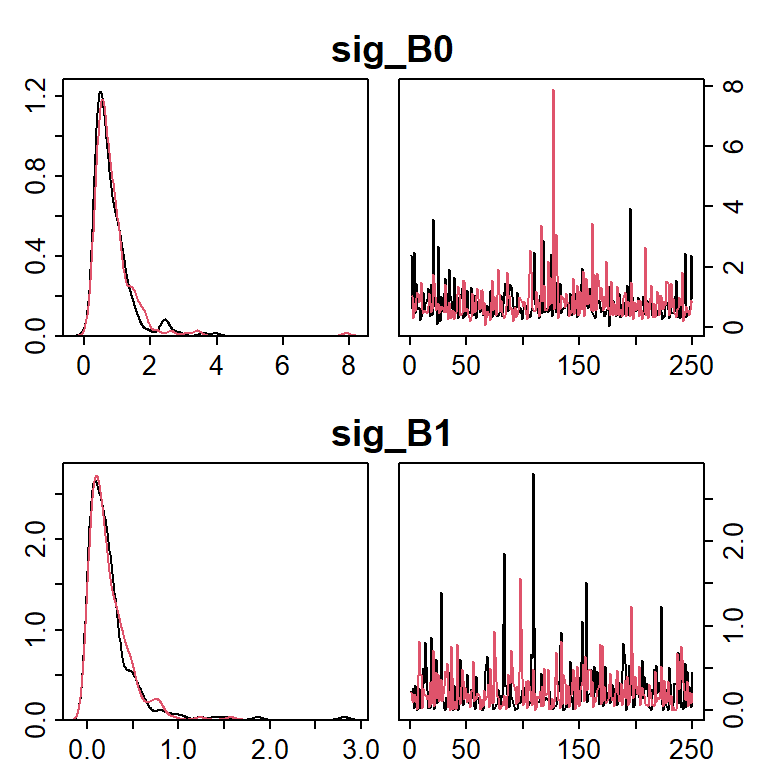

Flexible manipulation (extraction, summarization, diagnostics) of specific nodes from mcmc.list objects is one of the primary features of ‘postpack’. This flexibility is provided through the use of regular expressions. Regular expressions are a method of matching character strings using patterns. As an example, suppose you wished to extract all of the b0 parameters from the cjs object, which include b0[1], b0[2], b0[3], b0[4], and b0[5]. Without regular expressions, you would have to somehow state explictly that you want to extract each of these (perhaps using paste0("b0[", 1:5, "]")).
However, with regular expressions, you simply need to find a common feature of the strings you wish to match, and create a pattern that will exclude all strings that do not have that common feature. This capability greatly increases the ease and flexibility of performing tasks on specific nodes. You will need to learn some very basic regular expression syntax to get it to work properly.
Here is a very basic example. Begin by loading ‘postpack’ and the example mcmc.list:
Next, obtain a basic posterior summary for all nodes that contain the letter "B":
post_summ(cjs, params = "B", digits = 3)
## B0 sig_B0 B1 sig_B1
## mean 1.590 0.844 0.415 0.243
## sd 0.491 0.619 0.213 0.262
## 50% 1.569 0.682 0.397 0.178
## 2.5% 0.551 0.277 0.062 0.006
## 97.5% 2.588 2.439 0.864 0.821Because all of the node names contain a "B", they are matched and returned. So if you only wanted sig_B0 and sig_B1, you could pass params = "sig" as an argument to the ‘postpack’ function in question, to perform the action for only nodes that contain "sig":
diag_plots(cjs, params = "sig")

match_params()
Pattern matching is driven by the match_params() function (which is essentially a wrapper for stringr::str_detect()). Every function in ‘postpack’ that uses a param or params argument passes that argument to match_params() early on their calculations, so understanding the way it works is important.
Suppose you want to summarize the random slope and intercept for year 2 (named "b0[2]" and "b1[2]" in the output). Use match_params() to help you get the right regular expression code by checking what will be matched when you try to subset your output:
match_params(cjs, "2")
## [1] "b0[2]" "b1[2]" "SIG[2,1]" "SIG[1,2]" "SIG[2,2]" "p[2]"All nodes with a "2" would be returned. You could exclude the "SIG" elements using:
match_params(cjs, "[2]")
## [1] "b0[2]" "b1[2]" "p[2]"Users already familiar with regular expressions will see the square brackets ("[" and "]") as special characters and may be confused why this works. When using regular expressions, normally "[" and "]" have a special meaning and users would need to escape them (i.e., "\\[" and "\\]") to allow them to be matched as plain text. However, because "[" and "]" are frequently part of node names and users will wish to use them in pattern matching more frequently than as special characters, ‘postpack’ automatically escapes "[" and "]" if they are not already escaped.
If you do not wish to automatically escape "[" and "]" to allow a regular expression where brackets serve as special characters like "[:alnum:]", you must include the auto_escape = FALSE argument:
match_params(cjs, "[:alnum:]", auto_escape = FALSE)
## [1] "B0" "sig_B0" "B1" "sig_B1" "b0[1]" "b0[2]"
## [7] "b0[3]" "b0[4]" "b0[5]" "b1[1]" "b1[2]" "b1[3]"
## [13] "b1[4]" "b1[5]" "SIG[1,1]" "SIG[2,1]" "SIG[1,2]" "SIG[2,2]"
## [19] "p[2]" "p[3]" "p[4]"If you then also wish to match a "[" as plain text in the same regular expression, you can explicitly escape it:
match_params(cjs, "[:alnum:]\\[", auto_escape = FALSE)
## [1] "b0[1]" "b0[2]" "b0[3]" "b0[4]" "b0[5]" "b1[1]"
## [7] "b1[2]" "b1[3]" "b1[4]" "b1[5]" "SIG[1,1]" "SIG[2,1]"
## [13] "SIG[1,2]" "SIG[2,2]" "p[2]" "p[3]" "p[4]"All functions that accept either param or params argument also accept the auto_escape argument, and it is always TRUE by default. For what it is worth, I have only rarely used this feature, but chose to include it to allow complete regular expression capabilities.
With that out of the way, now further refine the regular expression to exclude the p[2] node from the output:
match_params(cjs, "b.[2]")
## [1] "b0[2]" "b1[2]"The "." serves as a wild card, which says match any one character. If you would have supplied simply "b[2]", you would get an error:
## Error:
## Supplied value(s) of params ("b[2]") did not have any matches in the nodes stored in post.
## All elements of params must have at least one match.
## The base names of all monitored nodes are:
## "B0", "sig_B0", "B1", "sig_B1",
## "b0", "b1", "SIG", and "p"Which is what will happen when any element supplied to params does not match one of the node names stored in the output. The wild card is necessary to specify that some character (here a "0" or a "1") falls between the "b" and the "[" characters in your desired match. You can now pass "b.[2]" to post_summ() with confidence knowing that only the two coefficients you want will be returned:
post_summ(cjs, "b.[2]", digits = 3)
## b0[2] b1[2]
## mean 2.319 0.423
## sd 0.356 0.218
## 50% 2.278 0.403
## 2.5% 1.784 0.046
## 97.5% 3.163 0.916NOTE: Because "." is a special character (a wild card), if you wish to match it as plain text, you must escape it. For example if you have both nodes "a.b" and "a_b" in your mcmc.list object x, running match_params(x, "a.b") will match both "a.b" and "a_b". If you want only "a.b", you must run match_params(x, "a\\.b")
As another example, instead of accessing all nodes that contain "B" in their name, suppose you wish to only extract those that contain "B" as the first character. You can force your match to start with certain patterns using the "^" symbol:
match_params(cjs, "^B")
## [1] "B0" "B1"Likewise, you could extract only nodes that end with "0" using the "$" symbol:
match_params(cjs, "0$")
## [1] "B0" "sig_B0"Note that no elements of "b0" are returned, because these nodes end with "]" (e.g., "b0[1]").
You can repeat a wild card or some other character one or more times using the "+" symbol:
match_params(cjs, "^s.+0$")
## [1] "sig_B0"Which forces the match to start with an "s", end with a "0", and have anything in between.
Because match_params() is a wrapper for stringr::str_detect(), most everything that works there will also with with ‘postpack’. There is a comprehensive description of all regular expression syntax accepted by ‘stringr’ here (also accessible in R using vignette("regular-expressions", package = "stringr")).